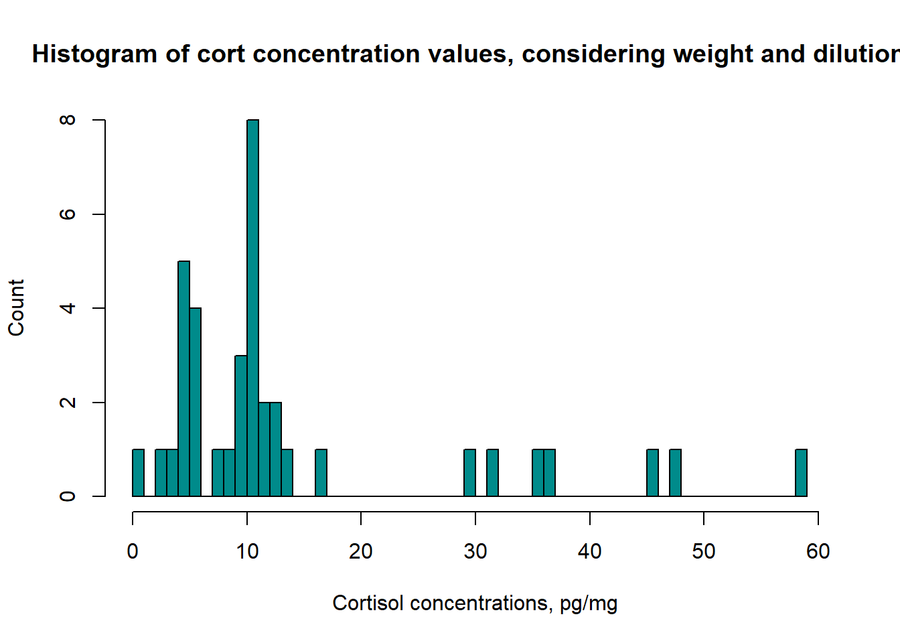
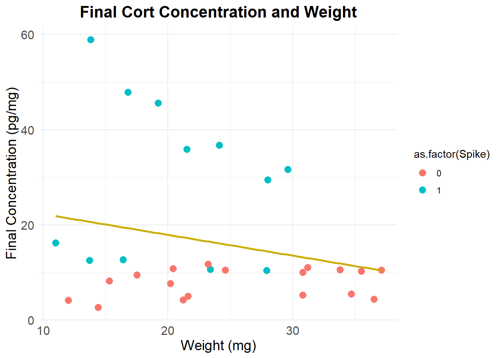

Last updated: 2024-10-17
Checks: 7 0
Knit directory: test-3/
This reproducible R Markdown analysis was created with workflowr (version 1.7.1). The Checks tab describes the reproducibility checks that were applied when the results were created. The Past versions tab lists the development history.
Great! Since the R Markdown file has been committed to the Git repository, you know the exact version of the code that produced these results.
Great job! The global environment was empty. Objects defined in the global environment can affect the analysis in your R Markdown file in unknown ways. For reproduciblity it’s best to always run the code in an empty environment.
The command set.seed(20241016) was run prior to running
the code in the R Markdown file. Setting a seed ensures that any results
that rely on randomness, e.g. subsampling or permutations, are
reproducible.
Great job! Recording the operating system, R version, and package versions is critical for reproducibility.
Nice! There were no cached chunks for this analysis, so you can be confident that you successfully produced the results during this run.
Great job! Using relative paths to the files within your workflowr project makes it easier to run your code on other machines.
Great! You are using Git for version control. Tracking code development and connecting the code version to the results is critical for reproducibility.
The results in this page were generated with repository version d11a004. See the Past versions tab to see a history of the changes made to the R Markdown and HTML files.
Note that you need to be careful to ensure that all relevant files for
the analysis have been committed to Git prior to generating the results
(you can use wflow_publish or
wflow_git_commit). workflowr only checks the R Markdown
file, but you know if there are other scripts or data files that it
depends on. Below is the status of the Git repository when the results
were generated:
Ignored files:
Ignored: .Rproj.user/
Note that any generated files, e.g. HTML, png, CSS, etc., are not included in this status report because it is ok for generated content to have uncommitted changes.
These are the previous versions of the repository in which changes were
made to the R Markdown (analysis/ELISA_computation.Rmd) and
HTML (docs/ELISA_computation.html) files. If you’ve
configured a remote Git repository (see ?wflow_git_remote),
click on the hyperlinks in the table below to view the files as they
were in that past version.
| File | Version | Author | Date | Message |
|---|---|---|---|---|
| Rmd | d11a004 | PalomaContreras25 | 2024-10-17 | wflow_publish("./analysis/ELISA_Computation.Rmd") |
| Rmd | a807fd1 | Paloma | 2024-10-16 | Update ELISA_computation.Rmd |
| html | 81e3bec | Paloma | 2024-10-16 | Build site. |
| Rmd | b03e143 | Paloma | 2024-10-16 | creating plots |
| html | b03e143 | Paloma | 2024-10-16 | creating plots |
| Rmd | 2cbdcc9 | Paloma | 2024-10-16 | merged data, cleaned, visualized some results |
df <- read.csv("./data/Data_QC_flagged.csv")
# remove unnecessary information
data <- df %>%
select(!(c(Wells, Raw.OD, Concentration_pg.ml, CV.Perc, SD, SEM)))Formula: ((A/B) * (C/D) * E * 10,000) = F
kable(head(data))| Sample | Binding.Perc | Average_Conc_pg.ml | Weight_mg | Buffer_nl | Spike | Failed_samples |
|---|---|---|---|---|---|---|
| 1 | 77.3 | 396.6 | 13.1 | 250 | 0 | HIGH CV |
| 10 | 37.6 | 3064.0 | 17.7 | 60 | 1 | HIGH CV |
| 11 | 71.6 | 513.2 | 17.5 | 250 | 0 | NA |
| 12 | 30.0 | 2728.0 | 24.1 | 250 | 1 | NA |
| 13 | 32.1 | 2477.0 | 16.8 | 250 | 1 | NA |
| 14 | 31.8 | 2504.0 | 13.8 | 250 | 1 | NA |
# Transform to μg/dl from assay output
data$Average_Conc_ug.dL <- c(data$Average_Conc_pg.ml/10000)
# Creating variables in indicated units
data$Vol_methanol_ml <- 1.3/1
data$Buffer_ml <- c(data$Buffer_nl/1000)
# Calculate final values
data$final_conc_pg.mg <- c((data$Average_Conc_ug.dL / data$Weight_mg) * data$Vol_methanol_ml * data$Buffer_ml * 10000 )summary(data$final_conc_pg.mg) Min. 1st Qu. Median Mean 3rd Qu. Max.
0.8615 5.3165 10.3590 14.2903 12.6576 58.9710 kable(head(data))| Sample | Binding.Perc | Average_Conc_pg.ml | Weight_mg | Buffer_nl | Spike | Failed_samples | Average_Conc_ug.dL | Vol_methanol_ml | Buffer_ml | final_conc_pg.mg |
|---|---|---|---|---|---|---|---|---|---|---|
| 1 | 77.3 | 396.6 | 13.1 | 250 | 0 | HIGH CV | 0.03966 | 1.3 | 0.25 | 9.839313 |
| 10 | 37.6 | 3064.0 | 17.7 | 60 | 1 | HIGH CV | 0.30640 | 1.3 | 0.06 | 13.502373 |
| 11 | 71.6 | 513.2 | 17.5 | 250 | 0 | NA | 0.05132 | 1.3 | 0.25 | 9.530857 |
| 12 | 30.0 | 2728.0 | 24.1 | 250 | 1 | NA | 0.27280 | 1.3 | 0.25 | 36.788382 |
| 13 | 32.1 | 2477.0 | 16.8 | 250 | 1 | NA | 0.24770 | 1.3 | 0.25 | 47.918155 |
| 14 | 31.8 | 2504.0 | 13.8 | 250 | 1 | NA | 0.25040 | 1.3 | 0.25 | 58.971015 |
hist(data$final_conc_pg.mg, col = "cyan4", main = c("Histogram of cort concentration values, considering weight and dilutions"), xlab = "Cortisol concentrations, pg/mg", ylab = "Count", breaks = 60, xlim = range(0:60))
ggplot(data, aes(x = final_conc_pg.mg, y = Weight_mg)) +
geom_point(color = "cyan4", size = 3) + # Points with custom color and size
geom_smooth(method = "lm", color = "gold3", se = FALSE) + # Regression line without confidence interval
theme_minimal() + # Minimalistic theme
labs(
title = "Relationship between Final Concentration and Weight",
x = "Final Concentration (pg/mg)", # Custom x-axis label
y = "Weight (mg)" # Custom y-axis label
) +
theme(
plot.title = element_text(hjust = 0.5, size = 16, face = "bold"), # Center title and adjust size
axis.title = element_text(size = 14), # Adjust axis label size
axis.text = element_text(size = 12) # Adjust axis text size
)`geom_smooth()` using formula = 'y ~ x'
outliers_29.5 <- data[(data$final_conc_pg.mg >= 29.5), ]
kable(outliers_29.5)| Sample | Binding.Perc | Average_Conc_pg.ml | Weight_mg | Buffer_nl | Spike | Failed_samples | Average_Conc_ug.dL | Vol_methanol_ml | Buffer_ml | final_conc_pg.mg | |
|---|---|---|---|---|---|---|---|---|---|---|---|
| 4 | 12 | 30.0 | 2728 | 24.1 | 250 | 1 | NA | 0.2728 | 1.3 | 0.25 | 36.78838 |
| 5 | 13 | 32.1 | 2477 | 16.8 | 250 | 1 | NA | 0.2477 | 1.3 | 0.25 | 47.91815 |
| 6 | 14 | 31.8 | 2504 | 13.8 | 250 | 1 | NA | 0.2504 | 1.3 | 0.25 | 58.97101 |
| 15 | 22 | 33.0 | 2377 | 21.5 | 250 | 1 | NA | 0.2377 | 1.3 | 0.25 | 35.93140 |
| 23 | 30A | 28.8 | 2888 | 29.6 | 250 | 1 | NA | 0.2888 | 1.3 | 0.25 | 31.70946 |
| 38 | 9 | 30.3 | 2693 | 19.2 | 250 | 1 | NA | 0.2693 | 1.3 | 0.25 | 45.58464 |
wflow_publish(“./analysis/ELISA_Computation.Rmd”)
sessionInfo()R version 4.3.1 (2023-06-16 ucrt)
Platform: x86_64-w64-mingw32/x64 (64-bit)
Running under: Windows 11 x64 (build 22631)
Matrix products: default
locale:
[1] LC_COLLATE=English_United States.utf8
[2] LC_CTYPE=English_United States.utf8
[3] LC_MONETARY=English_United States.utf8
[4] LC_NUMERIC=C
[5] LC_TIME=English_United States.utf8
time zone: America/New_York
tzcode source: internal
attached base packages:
[1] stats graphics grDevices utils datasets methods base
other attached packages:
[1] ggplot2_3.5.1 knitr_1.43 dplyr_1.1.2 workflowr_1.7.1
loaded via a namespace (and not attached):
[1] sass_0.4.7 utf8_1.2.3 generics_0.1.3 stringi_1.7.12
[5] lattice_0.21-8 digest_0.6.33 magrittr_2.0.3 evaluate_0.21
[9] grid_4.3.1 fastmap_1.1.1 Matrix_1.6-1.1 rprojroot_2.0.3
[13] jsonlite_1.8.7 processx_3.8.2 whisker_0.4.1 ps_1.7.5
[17] promises_1.2.1 httr_1.4.7 mgcv_1.8-42 fansi_1.0.4
[21] scales_1.3.0 jquerylib_0.1.4 cli_3.6.1 rlang_1.1.1
[25] munsell_0.5.0 splines_4.3.1 withr_2.5.0 cachem_1.0.8
[29] yaml_2.3.7 tools_4.3.1 colorspace_2.1-0 httpuv_1.6.11
[33] vctrs_0.6.3 R6_2.5.1 lifecycle_1.0.3 git2r_0.33.0
[37] stringr_1.5.0 fs_1.6.3 pkgconfig_2.0.3 callr_3.7.3
[41] pillar_1.9.0 bslib_0.5.1 later_1.3.1 gtable_0.3.4
[45] glue_1.6.2 Rcpp_1.0.11 highr_0.10 xfun_0.40
[49] tibble_3.2.1 tidyselect_1.2.0 rstudioapi_0.15.0 farver_2.1.1
[53] htmltools_0.5.6 nlme_3.1-162 labeling_0.4.3 rmarkdown_2.24
[57] compiler_4.3.1 getPass_0.2-4